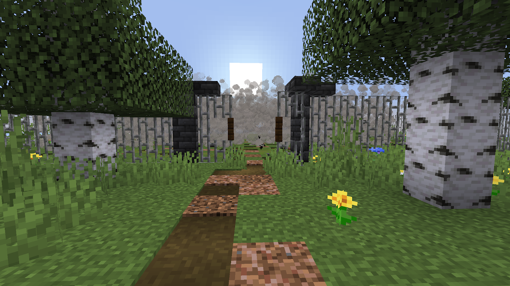

Объект
SCP-410-SP
Класс объекта
Особые условия содержания
Территория SCP-410 должна быть оцеплена трёхметровым забором. Рядом с объектом должен дежурить 1 сотрудник Службы безопасности. Дежурный сотрудник должен меняться 2 раза в сутки. Входить на территорию объекта запрещено.
Описание
SCP-410 представляет собой густой туман, дальность видимости в котором составляет 10-25 м. Туман появляется в период с 4 до 6 часов утра, а исчезает с 10 до 12 часов вечера.
Когда в туман входит млекопитающее, оно перемещается в случайную точку планеты, в которой в момент перемещения также наблюдается густой туман. Перемещение происходит мгновенно и ничем не сопровождается. Человек, вошедший в туман, не может определить момент перемещения, но это можно сделать с помощью любого средства связи.
В случайные моменты времени туман теряет аномальные свойства на 1-2 часа. Происхождение аномалии неизвестно. Закономерности в выборе точек перемещения не было обнаружено.
Приложение: Отчет №1
Так же мы нашли одного военнослужащего который согласился предоставить нам информацию о тумане, в качестве анонимности мы не будем раскрывать его имя и фамилию.
Др.Липкий - Итак [УДАЛЕНО], начнём с начала истории.. как вы попали в туман
Военнослужащий - Я.. я шёл со своим батальоном на полигон.. со мной были: старший лейтенант [УДАЛЕНО] и ещё парочку рядовых.
Др.Липкий - Хорошо. После того как вы зашли в туман что вы увидели?
Военнослужащий - Мы прошли сквозь туман.. и-и-и вместо полигона увидели избушку.. Ну такую.. типо как стоят в деревнях.. Всё было каким-то странным: Птицы не пели, трава не шелестела, казалось что даже ветра не было.. было всё всё каким то тихим.. ну мы подошли к избе этой, а там немцы едут! Мы с батальоном были в шоке... ну они давай как стрелять по нам! Я ####! старший лейтенант первый умер.. дальше как во сне.. нихера не помню.. помню только что все померли кроме меня.. затем я прошёл через этот же туман, а там все наши стоят! Живые сука! Я такой думаю ещё:"Реально походу сон приснился"
Др.Липкий - Так, может быть об этом тумане легенды ходили какие нибудь?
Военнослужащий - Да ходили.. но они были такие.. поверхностные я бы сказал. Говорили что там пропадали коровы, а однажды и бабка..
Др.Липкий - Ага,а ваши военнослужащие слышали эту историю или ещё нет?
Военнослужащий - Да. я им рассказывал.. они говорили что не может такого быть, что мне сон приснился плохой и т.п.
Др.Липкий - Хорошо, мы учтём это. Ладно я думаю можно закончить.